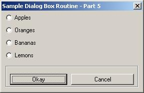
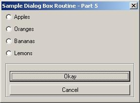
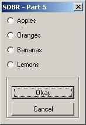
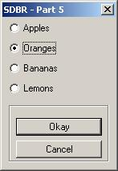
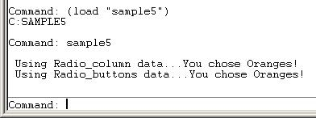

<html>


<!-- Mirrored from www.jefferypsanders.com/autolisp_DCL_Part5.html by HTTrack Website Copier/3.x [XR&CO'2004], Thu, 23 Sep 2004 01:09:47 GMT -->
<head>
<meta name="description" content="AutoLisp Dialog Control Language">
<meta name="GENERATOR" content="Microsoft FrontPage 5.0">
<meta name="keywords" content="autolisp, DCL, dialog, control, language">
<title>The AutoLisp Ultimate Tutorial&nbsp; - DCL</title>
</head>

<body>

</body>

</html>
<p align="center"><font color="#000000"><big><big><big><strong>The
    AutoLisp Tutorial - DCL</strong></big></big></big></font><font face="Helvetica"></p>
    </font><p align="center"><font color="#000000"><big><big><strong>Dialog Control Language -
    Part 5</strong></big></big></font></p>
    <hr size="4" color="#0000FF">
    <p>&nbsp; <big><strong>Part 5 - Radio Buttons</strong></big>&nbsp;&nbsp; </p>
    <hr size="4" color="#0000FF">
    <p>&nbsp;&nbsp; Let's build a working DCL file showing us exactly how to handle radio
    buttons. </p>
    <p>&nbsp; The first thing you need to know about a radio button is how stupid they are.
    &nbsp; They have no brains.&nbsp; They do not know what the other radio buttons are doing.
    &nbsp; You can layout six radio buttons and select everyone of them like they were
    toggles.&nbsp; That's not the way we use radio buttons.&nbsp; They are supposed to be
    smart.&nbsp; They should know what to do if a radio button around them is selected.
    &nbsp; They should turn themselves off because only one radio button in a group is
    supposed to be checked.&nbsp; That's where radio_column and radio_row come in to play.
    &nbsp; They are the brains for the radio buttons.&nbsp; They watch all the buttons in
    their row or column to make sure only one is turned on.&nbsp; Okay..moving on.</p>
    <p>&nbsp;&nbsp; We will build a DCL file containing 4 radio_buttons plus an Okay and
    Cancel button.&nbsp;&nbsp; The selected item will be displayed on the screen after the
    user presses the Okay button.</p>
    <hr size="4" color="#0000FF">
    <p>&nbsp; <strong>Layout thoughts:&nbsp;</strong>&nbsp; I will place the radio_buttons in
    a column, (stacked on top of each other).&nbsp; Then I'll put the Okay and Cancel buttons
    in a row at the bottom of the dialog box.&nbsp; So...I'll need something like this:</p>
    <p><font face="Courier New">: column { <br>
    &nbsp; : radio_column { <br>
    <font color="#FF0000">&nbsp;&nbsp;&nbsp; // Put code for radio_column here </font><br>
    &nbsp; &nbsp; : radio_column { <br>
    &nbsp;&nbsp;&nbsp;&nbsp;&nbsp; <font color="#FF0000">// Put code for radio_button 1 here</font><br>
    &nbsp;&nbsp;&nbsp; }&nbsp; <br>
    &nbsp;&nbsp;&nbsp; : radio_button { <br>
    &nbsp;&nbsp;&nbsp;&nbsp;&nbsp; <font color="#FF0000">// Put code for radio_button 2 here</font><br>
    &nbsp;&nbsp;&nbsp; }&nbsp; <br>
    &nbsp;&nbsp;&nbsp; : radio_button { <br>
    &nbsp;&nbsp;&nbsp;&nbsp;&nbsp; <font color="#FF0000">// Put code for radio_button 3 here</font><br>
    &nbsp;&nbsp;&nbsp; }&nbsp; <br>
    &nbsp;&nbsp;&nbsp; : radio_button { <br>
    &nbsp;&nbsp;&nbsp;&nbsp;&nbsp; <font color="#FF0000">// Put code for radio_button 4 here</font><br>
    &nbsp;&nbsp;&nbsp; }&nbsp; <br>
    &nbsp; }&nbsp; <br>
    &nbsp; : boxed_row { <br>
    &nbsp;&nbsp;&nbsp; : button { </font><br>
    <font face="Courier New">&nbsp;&nbsp;&nbsp;&nbsp;&nbsp;&nbsp; <font color="#FF0000">// Put
    code for the Okay button here</font><br>
    &nbsp;&nbsp;&nbsp; }&nbsp; <br>
    &nbsp;&nbsp;&nbsp; : button { </font><br>
    <font face="Courier New">&nbsp;&nbsp;&nbsp;&nbsp;&nbsp;&nbsp; <font color="#FF0000">// Put
    code for the Cancel button here</font><br>
    &nbsp;&nbsp;&nbsp; } <br>
    &nbsp; }&nbsp;&nbsp; <br>
    } </font></p>
    <hr size="4" color="#0000FF">
    <p>Let's copy in the code for the header and all of the controls above from the &quot;<a href="autolisp_DCL_Controls.html">Controls</a>&quot; section of this tutorial.&nbsp; I'll
    show them in red.&nbsp; Notice the key names and labels had to be changed.</p>
    <p><font color="#FF0000"><font face="Courier New">SAMPLE5 : dialog { <br>
    &nbsp;&nbsp;&nbsp;&nbsp;&nbsp; &nbsp;&nbsp;&nbsp; label = &quot;Sample Dialog Box Routine
    - Part 5&quot;;</font> </font><br>
    <font face="Courier New">&nbsp;&nbsp;&nbsp;&nbsp;&nbsp;&nbsp; &nbsp;&nbsp; : column { <br>
    &nbsp;&nbsp;&nbsp;&nbsp;&nbsp;&nbsp; &nbsp;&nbsp; &nbsp; : radio_column { <br>
    &nbsp;&nbsp;&nbsp;&nbsp;&nbsp;&nbsp; &nbsp;&nbsp; &nbsp;&nbsp;&nbsp; key = &quot;<font color="#FF0000">mychoice</font>&quot;; <br>
    &nbsp;&nbsp;&nbsp;&nbsp;&nbsp;&nbsp;&nbsp;&nbsp;&nbsp;&nbsp;&nbsp;&nbsp;&nbsp; :
    radio_button {<br>
    &nbsp;&nbsp;&nbsp;&nbsp;&nbsp;&nbsp;&nbsp;&nbsp;&nbsp;&nbsp;&nbsp;&nbsp;&nbsp; &nbsp; key
    = &quot;<font color="#FF0000">but1</font>&quot;;<br>
    &nbsp;&nbsp;&nbsp;&nbsp;&nbsp;&nbsp;&nbsp;&nbsp;&nbsp;&nbsp;&nbsp;&nbsp;&nbsp; &nbsp;
    label = &quot;<font color="#FF0000">Apples</font>&quot;;<br>
    &nbsp;&nbsp;&nbsp;&nbsp;&nbsp;&nbsp;&nbsp;&nbsp;&nbsp;&nbsp;&nbsp;&nbsp;&nbsp; }<br>
    &nbsp;&nbsp;&nbsp;&nbsp;&nbsp;&nbsp;&nbsp;&nbsp;&nbsp;&nbsp;&nbsp;&nbsp;&nbsp; :
    radio_button {<br>
    &nbsp;&nbsp;&nbsp;&nbsp;&nbsp;&nbsp;&nbsp;&nbsp;&nbsp;&nbsp;&nbsp;&nbsp;&nbsp; &nbsp; key
    = &quot;<font color="#FF0000">but2</font>&quot;;<br>
    &nbsp;&nbsp;&nbsp;&nbsp;&nbsp;&nbsp;&nbsp;&nbsp;&nbsp;&nbsp;&nbsp;&nbsp;&nbsp; &nbsp;
    label = &quot;<font color="#FF0000">Oranges</font>&quot;;<br>
    &nbsp;&nbsp;&nbsp;&nbsp;&nbsp;&nbsp;&nbsp;&nbsp;&nbsp;&nbsp;&nbsp;&nbsp;&nbsp; }<br>
    &nbsp;&nbsp;&nbsp;&nbsp;&nbsp;&nbsp;&nbsp;&nbsp;&nbsp;&nbsp;&nbsp;&nbsp;&nbsp; :
    radio_button {<br>
    &nbsp;&nbsp;&nbsp;&nbsp;&nbsp;&nbsp;&nbsp;&nbsp;&nbsp;&nbsp;&nbsp;&nbsp;&nbsp; &nbsp; key
    = &quot;<font color="#FF0000">but3</font>&quot;;<br>
    &nbsp;&nbsp;&nbsp;&nbsp;&nbsp;&nbsp;&nbsp;&nbsp;&nbsp;&nbsp;&nbsp;&nbsp;&nbsp; &nbsp;
    label = &quot;<font color="#FF0000">Bananas</font>&quot;;<br>
    &nbsp;&nbsp;&nbsp;&nbsp;&nbsp;&nbsp;&nbsp;&nbsp;&nbsp;&nbsp;&nbsp;&nbsp;&nbsp; }<br>
    &nbsp;&nbsp;&nbsp;&nbsp;&nbsp;&nbsp;&nbsp;&nbsp;&nbsp;&nbsp;&nbsp;&nbsp;&nbsp; :
    radio_button {<br>
    &nbsp;&nbsp;&nbsp;&nbsp;&nbsp;&nbsp;&nbsp;&nbsp;&nbsp;&nbsp;&nbsp;&nbsp;&nbsp; &nbsp; key
    = &quot;<font color="#FF0000">but4</font>&quot;;<br>
    &nbsp;&nbsp;&nbsp;&nbsp;&nbsp;&nbsp;&nbsp;&nbsp;&nbsp;&nbsp;&nbsp;&nbsp;&nbsp; &nbsp;
    label = &quot;<font color="#FF0000">Lemons</font>&quot;;<br>
    &nbsp;&nbsp;&nbsp;&nbsp;&nbsp;&nbsp;&nbsp;&nbsp;&nbsp;&nbsp;&nbsp;&nbsp;&nbsp; }<br>
    &nbsp;&nbsp;&nbsp;&nbsp;&nbsp;&nbsp; &nbsp;&nbsp;&nbsp;&nbsp; }<br>
    &nbsp;&nbsp;&nbsp;&nbsp;&nbsp;&nbsp;&nbsp;&nbsp;&nbsp;&nbsp;&nbsp; : <font color="#0000FF">boxed_row</font>
    {<br>
    &nbsp;&nbsp;&nbsp;&nbsp;&nbsp;&nbsp;&nbsp;&nbsp;&nbsp;&nbsp;&nbsp;&nbsp;&nbsp; : button {<br>
    <font color="#FF0000">&nbsp;&nbsp;&nbsp;&nbsp;&nbsp;&nbsp;&nbsp;&nbsp;&nbsp;&nbsp;&nbsp;&nbsp;&nbsp;&nbsp;&nbsp;
    key = &quot;accept&quot;;<br>
    &nbsp;&nbsp;&nbsp;&nbsp;&nbsp;&nbsp;&nbsp;&nbsp;&nbsp;&nbsp;&nbsp;&nbsp;&nbsp;&nbsp;&nbsp;
    label = &quot; Okay &quot;;<br>
    &nbsp;&nbsp;&nbsp;&nbsp;&nbsp;&nbsp;&nbsp;&nbsp;&nbsp;&nbsp;&nbsp;&nbsp;&nbsp;&nbsp;&nbsp;
    is_default = true;</font><br>
    &nbsp;&nbsp;&nbsp;&nbsp;&nbsp;&nbsp;&nbsp;&nbsp;&nbsp;&nbsp;&nbsp;&nbsp;&nbsp; }<br>
    &nbsp;&nbsp;&nbsp;&nbsp;&nbsp;&nbsp;&nbsp;&nbsp;&nbsp;&nbsp;&nbsp;&nbsp;&nbsp; : button {<br>
    <font color="#FF0000">&nbsp;&nbsp;&nbsp;&nbsp;&nbsp;&nbsp;&nbsp;&nbsp;&nbsp;&nbsp;&nbsp;&nbsp;&nbsp;&nbsp;&nbsp;
    key = &quot;cancel&quot;;<br>
    &nbsp;&nbsp;&nbsp;&nbsp;&nbsp;&nbsp;&nbsp;&nbsp;&nbsp;&nbsp;&nbsp;&nbsp;&nbsp;&nbsp;&nbsp;
    label = &quot; Cancel &quot;;<br>
    &nbsp;&nbsp;&nbsp;&nbsp;&nbsp;&nbsp;&nbsp;&nbsp;&nbsp;&nbsp;&nbsp;&nbsp;&nbsp;&nbsp;&nbsp;
    is_default = false;<br>
    &nbsp;&nbsp;&nbsp;&nbsp;&nbsp;&nbsp;&nbsp;&nbsp;&nbsp;&nbsp;&nbsp;&nbsp;&nbsp;&nbsp;&nbsp;
    is_cancel = true;</font><br>
    &nbsp;&nbsp;&nbsp;&nbsp;&nbsp;&nbsp;&nbsp;&nbsp;&nbsp;&nbsp;&nbsp;&nbsp;&nbsp; }<br>
    &nbsp;&nbsp;&nbsp;&nbsp;&nbsp;&nbsp;&nbsp;&nbsp;&nbsp;&nbsp;&nbsp; }<br>
    &nbsp;&nbsp;&nbsp;&nbsp;&nbsp;&nbsp; &nbsp;&nbsp; } </font></p>
    <p><font face="Courier New">}</font></p>
    <p><strong>Right click and copy the above. Open NotePad and paste it.&nbsp; Save the file
    as SAMPLE5.DCL&nbsp; <em>Be sure to change the &quot;Save as Type&quot; drop down box to
    &quot;All Files&quot; before saving it or it will put a&nbsp; &quot;.txt&quot; extension
    on the file name.&nbsp; Save this file somewhere in the AutoCAD search path.</em></strong></p>
    <hr size="4" color="#0000FF">
    <p>&nbsp; Next we will get a copy of the AutoLisp model and revise it.&nbsp; All new code
    is shown in red.</p>
    <p><small><font face="Courier New">(defun C:<font color="#FF0000">SAMPLE5</font>()<br>
    <br>
    &nbsp; ;;;--- Load the dcl file<br>
    &nbsp; (setq dcl_id (load_dialog &quot;<font color="#FF0000">SAMPLE5</font>.dcl&quot;))<br>
    <br>
    &nbsp; ;;;--- Load the dialog definition if it is not already loaded<br>
    &nbsp; (if (not (new_dialog &quot;<font color="#FF0000">SAMPLE5</font>&quot; dcl_id) )
    (exit))<br>
    <br>
    &nbsp; ;;;--- If an action event occurs, do this function<br>
    &nbsp; (action_tile &quot;accept&quot; &quot;(setq ddiag 2)<font color="#0000FF">(saveVars)</font>(done_dialog)&quot;)<br>
    &nbsp; (action_tile &quot;cancel&quot; &quot;(setq ddiag 1)(done_dialog)&quot;)<br>
    <br>
    &nbsp; ;;;--- Display the dialog box<br>
    &nbsp; (start_dialog)<br>
    <br>
    &nbsp; ;;;--- Unload the dialog box<br>
    &nbsp; (unload_dialog dcl_id)<br>
    <br>
    &nbsp; ;;;--- If the user pressed the Cancel button<br>
    &nbsp; (if(= ddiag 1)<br>
    &nbsp;&nbsp;&nbsp; (princ &quot;\n <font color="#FF0000">Sample5</font> cancelled!&quot;)<br>
    &nbsp; )<br>
    <br>
    &nbsp; ;;;--- If the user pressed the Okay button<br>
    &nbsp; (if(= ddiag 2)<br>
    &nbsp;&nbsp;&nbsp; (progn<br>
    &nbsp;&nbsp;&nbsp;&nbsp;&nbsp; (princ &quot;\n The user pressed Okay!&quot;)<br>
    &nbsp;&nbsp;&nbsp; )<br>
    &nbsp; )<br>
    <br>
    &nbsp; ;;;--- Suppress the last echo for a clean exit<br>
    &nbsp; (princ)<br>
    <br>
    )</font></small>&nbsp; </p>
    <p>&nbsp; <strong>Right click and copy the above. Open NotePad and paste it.&nbsp; Save
    the file as SAMPLE5.LSP&nbsp; <em>Be sure to change the &quot;Save as Type&quot; drop down
    box to &quot;All Files&quot; before saving it or it will put a&nbsp; &quot;.txt&quot;
    extension on the file name.&nbsp; Save this file somewhere in the AutoCAD search path.</em></strong></p>
    <hr size="4" color="#0000FF">
    <p>&nbsp; Let's load the program and see what the DCL file looks like.&nbsp; On the
    command line type this:</p>
    <p>Command: <font face="Courier New">(load &quot;sample5&quot;)</font> and press enter</p>
    <p>&nbsp; You should see this</p>
    <p>C:Sample5 <br>
    Command:</p>
    <p>&nbsp; Now type Sample5 and press enter.&nbsp; If everything went according to plan you
    should see this on your screen:</p>
    <p>&nbsp;</p>
    <p align="center">
    </p>
    <p align="left">&nbsp;&nbsp; That doesn't look very good does it?&nbsp; Let's change the <font color="#0000FF">boxed_row</font> into a <font color="#0000FF">boxed_column</font> in our
    DCL file.&nbsp; <em>(See the blue text in the DCL file above)</em> Make the changes then
    Save the Sample5.DCL file.&nbsp;&nbsp; No need to load the autolisp program again, it's
    loaded.&nbsp; Just run the Sample5 program again.&nbsp; Now it should look like this:</p>
    <p align="center">
    </p>
    <p align="left">&nbsp;&nbsp; It still doesn't look right.&nbsp; It's our label
    &quot;Sample Dialog Box Routine - Part 5&quot; that is causing the problem.&nbsp; Let's
    shorten it to &quot;SDBR - Part 5&quot; and try it again:</p>
    <p align="center">
    </p>
    <p align="left">Looks better!&nbsp; </p>
    <hr size="4" color="#0000FF">
    <p>&nbsp;&nbsp; Looking good so far.&nbsp; We need to add the <font color="#0000FF">SaveVars</font>
    function to save the selected items from the radio_column&nbsp; when the Okay button is
    pressed.&nbsp; <em>Look at the blue text in the Sample5.lsp program above.</em></p>
    <p>&nbsp; Let's steal the saveVars routine from the radio_column control on the &quot;<a href="autolisp_DCL_SaveVar.html">Saving data from the dialog box</a>&quot; page of this
    tutorial and modify it.&nbsp; I'll show the modifications in red.</p>
    <p>&nbsp; We can do this two different ways.&nbsp; We can check each radio_button to find
    out which one is on or we can check the entire column of radio_buttons by getting the
    value of the radio_column.&nbsp; </p>
    <p>First method:&nbsp; Checking the Radio_Column:</p>
    <p><small><font face="Courier New">(defun saveVars()</font></small></p>
    <p><small><font face="Courier New">&nbsp; ;;;--- Get the key of the choice made<br>
    &nbsp; ;;;&nbsp;&nbsp;&nbsp; [ returns &quot;<font color="#FF0000">but1</font>&quot;
    &quot;<font color="#FF0000">but2</font>&quot; &quot;<font color="#FF0000">but3</font>&quot;
    or &quot;<font color="#FF0000">but4</font>&quot; whichever is selected.]</font></small></p>
    <p><small><font face="Courier New">&nbsp; (setq <font color="#FF0000">myChoice</font>(get_tile
    &quot;<font color="#FF0000">mychoice</font>&quot;))</font></small></p>
    <p><small><font face="Courier New">)</font></small></p>
    <p><small><font face="Courier New">Second method: Checking each Radio_Button:</font></small></p>
    <p><small><font face="Courier New">(defun saveVars()</font></small></p>
    <p><small><font face="Courier New">;;;--- Get the value of each item<br>
    &nbsp; (setq choice1(atoi(get_tile &quot;<font color="#FF0000">but1</font>&quot;)))&nbsp; </font>//
    0 = not chosen &nbsp;&nbsp; 1 = chosen&nbsp;&nbsp; <font face="Courier New"><br>
    &nbsp; (setq choice2(atoi(get_tile &quot;<font color="#FF0000">but2</font>&quot;)))&nbsp; </font>//
    0 = not chosen &nbsp;&nbsp; 1 = chosen<font face="Courier New"><br>
    &nbsp; (setq choice3(atoi(get_tile &quot;<font color="#FF0000">but3</font>&quot;)))&nbsp; </font>//
    0 = not chosen &nbsp;&nbsp; 1 = chosen<font face="Courier New"><br>
    &nbsp; (setq choice4(atoi(get_tile &quot;<font color="#FF0000">but4</font>&quot;)))&nbsp; </font>//
    0 = not chosen &nbsp;&nbsp; 1 = chosen</small></p>
    <p><small>)</small></p>
    <p>&nbsp; Wow! That was easy.&nbsp; So...Which one do we use?&nbsp; For this tutorial,
    let's use both.&nbsp; Why not?&nbsp; </p>
    <p>&nbsp;</p>
    <hr size="4" color="#0000FF">
    <p><small><font face="Courier New">(defun saveVars()</font></small></p>
    <p><small><font face="Courier New">&nbsp; ;;;--- Get the key of the choice made<br>
    &nbsp; ;;;&nbsp;&nbsp;&nbsp; [ returns &quot;<font color="#FF0000">but1</font>&quot;
    &quot;<font color="#FF0000">but2</font>&quot; &quot;<font color="#FF0000">but3</font>&quot;
    or &quot;<font color="#FF0000">but4</font>&quot; whichever is selected.]</font></small></p>
    <p><small><font face="Courier New">&nbsp; (setq <font color="#FF0000">myChoice</font>(get_tile
    &quot;<font color="#FF0000">mychoice</font>&quot;))</font></small></p>
    <p><small><font face="Courier New">&nbsp; ;;;--- Get the value of each item<br>
    &nbsp; (setq choice1(atoi(get_tile &quot;<font color="#FF0000">but1</font>&quot;)))&nbsp; </font>//
    0 = not chosen &nbsp;&nbsp; 1 = chosen&nbsp;&nbsp; <font face="Courier New"><br>
    &nbsp; (setq choice2(atoi(get_tile &quot;<font color="#FF0000">but2</font>&quot;)))&nbsp; </font>//
    0 = not chosen &nbsp;&nbsp; 1 = chosen<font face="Courier New"><br>
    &nbsp; (setq choice3(atoi(get_tile &quot;<font color="#FF0000">but3</font>&quot;)))&nbsp; </font>//
    0 = not chosen &nbsp;&nbsp; 1 = chosen<font face="Courier New"><br>
    &nbsp; (setq choice4(atoi(get_tile &quot;<font color="#FF0000">but4</font>&quot;)))&nbsp; </font>//
    0 = not chosen &nbsp;&nbsp; 1 = chosen</small></p>
    <p><small>)</small></p>
    <hr size="4" color="#0000FF">
    <p>Add this to the original Sample5.lsp program and we should have
    something that looks like this:</p>
    <p><font face="Courier New" color="#000000"><small>(defun saveVars()</small></font></p>
    <p><font face="Courier New" color="#000000"><small>&nbsp; ;;;--- Get the key of the choice
    made<br>
    &nbsp; ;;;&nbsp;&nbsp;&nbsp; [ returns &quot;but1&quot; &quot;but2&quot; &quot;but3&quot;
    or &quot;but4&quot; whichever is selected.]</small></font></p>
    <p><font face="Courier New" color="#000000"><small>&nbsp; (setq myChoice(get_tile
    &quot;mychoice&quot;))</small></font></p>
    <p><font color="#000000"><small><font face="Courier New">&nbsp; ;;;--- Get the value of
    each item<br>
    &nbsp; (setq choice1(atoi(get_tile &quot;but1&quot;)))&nbsp; </font>// 0 = not chosen
    &nbsp;&nbsp; 1 = chosen&nbsp;&nbsp; <font face="Courier New"><br>
    &nbsp; (setq choice2(atoi(get_tile &quot;but2&quot;)))&nbsp; </font>// 0 = not chosen
    &nbsp;&nbsp; 1 = chosen<font face="Courier New"><br>
    &nbsp; (setq choice3(atoi(get_tile &quot;but3&quot;)))&nbsp; </font>// 0 = not chosen
    &nbsp;&nbsp; 1 = chosen<font face="Courier New"><br>
    &nbsp; (setq choice4(atoi(get_tile &quot;but4&quot;)))&nbsp; </font>// 0 = not chosen
    &nbsp;&nbsp; 1 = chosen</small></font></p>
    <p><font color="#000000"><small>)</small></font></p>
    <p><small><font face="Courier New" color="#000000">(defun
    C:SAMPLE5()<br>
    <br>
    &nbsp; ;;;--- Load the dcl file<br>
    &nbsp; (setq dcl_id (load_dialog &quot;SAMPLE5.dcl&quot;))<br>
    <br>
    &nbsp; ;;;--- Load the dialog definition if it is not already loaded<br>
    &nbsp; (if (not (new_dialog &quot;SAMPLE5&quot; dcl_id) ) (exit))<br>
    <br>
    &nbsp; ;;;--- If an action event occurs, do this function<br>
    &nbsp; (action_tile &quot;accept&quot; &quot;(setq ddiag 2)(saveVars)(done_dialog)&quot;)<br>
    &nbsp; (action_tile &quot;cancel&quot; &quot;(setq ddiag 1)(done_dialog)&quot;)<br>
    <br>
    &nbsp; ;;;--- Display the dialog box<br>
    &nbsp; (start_dialog)<br>
    <br>
    &nbsp; ;;;--- Unload the dialog box<br>
    &nbsp; (unload_dialog dcl_id)<br>
    <br>
    &nbsp; ;;;--- If the user pressed the Cancel button<br>
    &nbsp; (if(= ddiag 1)<br>
    &nbsp;&nbsp;&nbsp; (princ &quot;\n Sample5 cance</font><font face="Courier New">lled!&quot;)<br>
    &nbsp; )<br>
    <br>
    &nbsp; ;;;--- If the user pressed the Okay button<br>
    &nbsp; (if(= ddiag 2)<br>
    &nbsp;&nbsp;&nbsp; (progn<br>
    &nbsp;&nbsp;&nbsp;&nbsp;&nbsp; <font color="#0000FF">(princ &quot;\n The user pressed
    Okay!&quot;)</font><br>
    &nbsp;&nbsp;&nbsp; )<br>
    &nbsp; )<br>
    <br>
    &nbsp; ;;;--- Suppress the last echo for a clean exit<br>
    &nbsp; (princ)<br>
    <br>
    )</font></small>&nbsp; </p>
    <hr size="4" color="#0000FF">
    <p><font face="Courier New">&nbsp; </font>Last item.&nbsp; We need to replace the line in
    the program:<font face="Courier New" color="#0000FF"><small> (princ &quot;\n The user
    pressed Okay!&quot;)</small></font>&nbsp; with something to display the selected
    item.&nbsp;&nbsp; </p>
    <p align="left"><font face="Courier New" color="#000000"><small>&nbsp; ;;;--- If the user
    pressed the Okay button<br>
    &nbsp; (if(= ddiag 2)<br>
    &nbsp;&nbsp;&nbsp; (progn</small></font></p>
    <p align="left"><small><font face="Courier New" color="#000000">&nbsp;&nbsp;&nbsp;&nbsp;&nbsp;
    ;;;--- Inform the user of his selection using the radio_column data<br>
    </font><font color="#FF0000" face="Courier New">&nbsp;&nbsp;&nbsp;&nbsp;&nbsp; (princ
    &quot;\n Using Radio_column data...You chose &quot;)<br>
    &nbsp;&nbsp;&nbsp;&nbsp;&nbsp; (cond<br>
    &nbsp;&nbsp;&nbsp;&nbsp;&nbsp;&nbsp;&nbsp; ((= myChoice &quot;but1&quot;)(princ
    &quot;Apples!&quot;))<br>
    &nbsp;&nbsp;&nbsp;&nbsp;&nbsp;&nbsp;&nbsp; ((= myChoice &quot;but2&quot;)(princ
    &quot;Oranges!&quot;))<br>
    &nbsp;&nbsp;&nbsp;&nbsp;&nbsp;&nbsp;&nbsp; ((= myChoice &quot;but3&quot;)(princ
    &quot;Bananas!&quot;))<br>
    &nbsp;&nbsp;&nbsp;&nbsp;&nbsp;&nbsp;&nbsp; ((= myChoice &quot;but4&quot;)(princ
    &quot;Lemons!&quot;))<br>
    &nbsp;&nbsp;&nbsp; &nbsp; )</font></small></p>
    <p align="left"><small><font face="Courier New" color="#000000">&nbsp;&nbsp;&nbsp;&nbsp;&nbsp;
    ;;;--- Inform the user of his selection using the radio_buttons data<br>
    </font><font color="#FF0000" face="Courier New">&nbsp;&nbsp;&nbsp;&nbsp;&nbsp; (princ
    &quot;\n Using Radio_buttons data...You chose &quot;)<br>
    &nbsp;&nbsp;&nbsp;&nbsp;&nbsp; (cond<br>
    &nbsp;&nbsp;&nbsp;&nbsp;&nbsp;&nbsp;&nbsp; ((= Choice1 1)(princ &quot;Apples!&quot;))<br>
    &nbsp;&nbsp;&nbsp;&nbsp;&nbsp;&nbsp;&nbsp; ((= Choice2 1)(princ &quot;Oranges!&quot;))<br>
    &nbsp;&nbsp;&nbsp;&nbsp;&nbsp;&nbsp;&nbsp; ((= Choice3 1)(princ &quot;Bananas!&quot;))<br>
    &nbsp;&nbsp;&nbsp;&nbsp;&nbsp;&nbsp;&nbsp; ((= Choice4 1)(princ &quot;Lemons!&quot;))<br>
    &nbsp;&nbsp;&nbsp; &nbsp; )</font></small></p>
    <p align="left"><small><font face="Courier New" color="#000000">&nbsp;&nbsp;&nbsp; )<br>
    &nbsp; )</font><font face="Courier New"><br>
    <br>
    </font></small></p>
    <hr size="4" color="#0000FF">
    <p><font color="#000000">Add the above to the autolisp file, save it and test it out.
    &nbsp; Everything working okay?</font></p>
    <p align="center">
    </p>
    <p align="center">
    </p>
    <hr size="4" color="#0000FF">
    <p><font color="#000000">&nbsp; </font></p>
    <p>&nbsp; When you get your program tested and everything is working, move the blue line
    above, [ <font face="Courier New" color="#0000FF"><small>(defun C:SAMPLE5()</small></font>
    ] all the way to the top of the file.&nbsp; This will make all of your variables local and
    will reset them all to nil when the program ends.</p>
    <p>&nbsp; That's it.&nbsp; We're done.</p>
    <p align="center"><a href="autolisp_DCL.html">Back</a></p>
    <hr size="4" color="#0000FF">
    <p align="center"><a href="index.html">AutoLisp Tutorial Home</a></p>
    